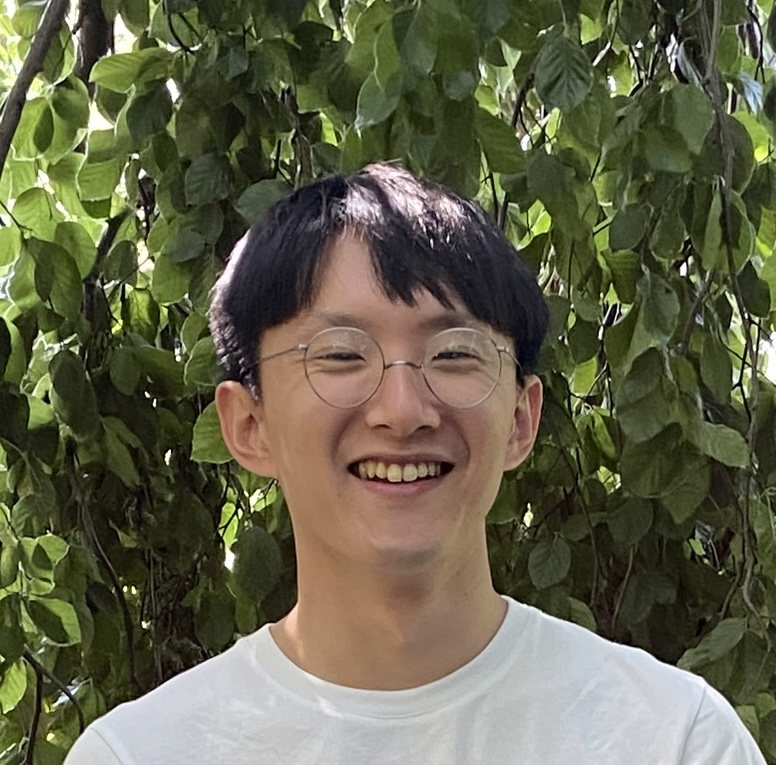

Shuzo Kato / 加藤 修三
Ph.D. student
Cluster of Excellence Physics of Life, TU Dresden
shuzo.kato*tu-dresden.de
Google Scholar
About
I am a Ph.D. student in Physics at TU Dresden in the group of Jan Brugues.
Fascinated by the beautiful nature of life, I am interested in how biological functions emerge from
self-organization in non-equilibrium systems. Wandering at the intersection of physics, engineering and biology,
I found my passion in pursuing the physics of life through tinkering.
Currently I am working on subcellular self-organization: phase separation, using interdisciplinary
approaches of soft condensed matter physics and synthetic/cell biology. With Prof. Yusuke Maeda at Kyushu
Univesity, I experimentally invesitigated phase separation in bacterial cytoplasm using cell-free expression
reactions and its interplay with gene
expression. My work has also involved the quantitative analysis of biomolecular condensates
within eukaryotic cells. By combining bottom-up and top-down approaches, I seek to elucidate principles in
living systems from the origin of life to eukaryotes.
[Full CV]
Education
- Technische Universität Dresden (Oct. 2023 - Present)
- Ph.D. student (Supervisor: Prof. Jan Brugues)
- Kyushu University (Apr. 2020 - Sep. 2023)
- M.Sc. in Physics (2022)
- MSc thesis: “Liquid-liquid phase separation and
gene expression regulation in synthetic cells” (Supervisor: Prof. Yusuke T. Maeda)
- Keio University (Apr. 2015 - Mar. 2020)
- B.Eng. in Mechanical Engineering
- BEng thesis: “Adsorption dynamics of pyruvic acids on struvite mineral surface: molecular
dynamics
study"
(Supervisor: Prof. Kenji Yasuoka)
- Technische Universität München (Oct. 2018 - Aug. 2019)
- Exchange study in Physics
- Visiting research in molecular dynamics simulation of protein folding (Supervisor: Prof. Martin
Zacharias)
Other Research Experiences
- RIKEN Center for Biosystems Dynamics Research (BDR) (Sep. - Nov. 2021)
- Research assistant / Visiting student (Supervisor: Dr. Kyogo Kawaguchi)
- Research and technological development of quantitative experiments on biomolecular condensates in
eukaryotic cell nuclei
Publication (Peer-reviewed)
- S. Kato, D. Garenne, V. Noireaux, Y. T. Maeda, "Phase Separation and
Protein
Partitioning in Compartmentalized Cell-Free Expression Reactions". Biomacromolecules
22,
3451-3459
(2021).
[Link].
Publication (Japanese, 日本語)
- 前多裕介, 加藤修三, 福山達也, “ソフトマターで分子を運び、選り分ける”, 607, 現代化学 (2021).
Fellowships & Grants
- JSPS Research Fellowship DC1, Japan Society for the Promotion of Science (2022-2025)
Awards
- Student Presentation Award, The Physical Society of Japan 2022 (77th) Annual Meeting (2022)
- Student Presentation Award, The 59th annual meeting of the Biophysical Society of Japan (2021)
- Fujiwara Award, Faculty of Science and Technology, Keio University (2020)
Talks
- Shuzo Kato, David Garenne, Vincent Noireaux and Yusuke T. Maeda, “The dynamics of droplet coarsening in
confined cell-free expression reactions”, STATPHYS28, Tokyo, Japan, Aug. 2023.
Outreach
- Staff, The 63rd Summer School of the Young Researchers' Society for Biophysics (第63回生物物理若手の会夏の学校)
- Library Teaching Assistant (Cuter), Kyushu University Library
- "細胞を こわす・つくる・理解する ~生命現象の物理学~ (Break, Build, and Understand Cells: The Physics of Life)",
プレゼンテーション講座 [PDF]
- Maintainer, soft/living matter fanclub (@softlivmat_fc)
- Presenter, "“人工細胞” 細胞を作って探る 細胞内分子配置メカニズム (Synthetic cells: build to understand the subcellular
organization)",
XPLANE CAFE 5 MINUTE CHALLENGE
[Link]